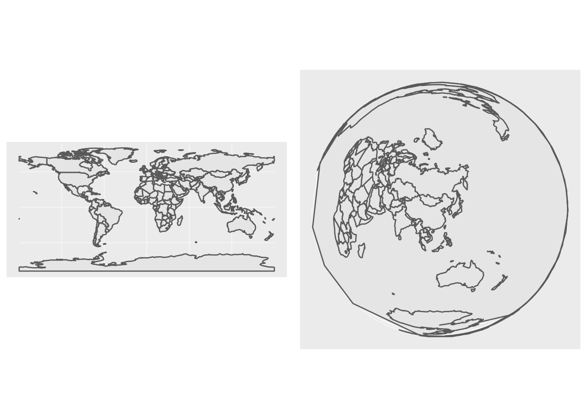

Chapitre 8 Les reprojections
Dans ce chapitre, nous allons utiliser les librairies suivantes.
library(sf)
library(tidyverse)
library(ggplot2)
library(patchwork)
library(lwgeom)Pour rappel, il existe deux types de CRS, les CRS géographiques (longitude/lattitude avec pour unité de compté des degrés) et les CRS projeté (avec un datum et une unité en mètre par exemple).
La plupart des fonctions de sf présuppose s’appliquer sur un CRS projeté, car les fonctions de GEOS sur lesquelles elles se basent le font aussi.
8.1 Un premier exemple de reprojection
Prenons les coordonnées de Nantes en WGS 84:
nantes<-data.frame(lon=-1.553621,lat=47.218371) %>%
st_as_sf(coords = c("lon", "lat")) %>%
st_set_crs(4326)On peut visualiser nos données
mapview(nantes)st_is_longlat() est fonction de sf permet de faire un test sur la famille de CRS à laquelle on a à faire.
st_is_longlat(nantes)[1] TRUEEssayons de créer un buffer de 1km autour de nantes
nantes_buffer= st_buffer(nantes, dist = 1)Warning in st_buffer.sfc(st_geometry(x), dist, nQuadSegs, endCapStyle =
endCapStyle, : st_buffer does not correctly buffer longitude/latitude datamapview(list(nantes,nantes_buffer))Le message est clair et indique qu’un buffer ne marchera pas correctement sur des données en projection longitude / lattitude.
Tentons une reprojection. La fonction permettant une reprojection est st_transform().
On va ici passer en lambert 93 nos données.
nantes_proj<-st_transform(nantes, 2154)Le CRS lambert 93 n’est bien pas une projection en longitude lattitude :
st_is_longlat(nantes_proj)[1] FALSEnantes_proj_buffer= st_buffer(nantes_proj, dist = 1)mapview(list(nantes_proj,nantes_proj_buffer))8.2 Quand reprojeter ?
Quelques cas usuel qui peuvent vous amener à reprojeter vos données :
la manipulation de données fournies dans des CRS différents?
l’usage du package leaflet impose des données spécifiées en WGS 84
le besoin de visualiser vos données suivant la conversion de certaines propriétés des objets à la surface de la terre.
l’usage de fonctions demandant à utiliser des CRS projetés (comme
st_buffer()ci-dessus)
Un exemple d’usage : la distance de Rennes à Nantes
Prenons les coordonnées WGS 84 de Rennes
rennes<-data.frame(lon=-1.6777926,lat=48.117266) %>%
st_as_sf(coords = c("lon", "lat")) %>%
st_set_crs(4326)mapview(rennes)Tentons de calculer la distance de Rennes à Nantes.
Avec la données en Lambert 93, la fonction st_distance() renvoie un message d’erreur.
st_distance(rennes,nantes_proj)Error in st_distance(rennes, nantes_proj): st_crs(x) == st_crs(y) is not TRUEAvec la données en WGS 84, la fonction st_distance() renvoie un bien le résultat.
st_distance(rennes,nantes)Units: [m]
[,1]
[1,] 100376.78.3 Quel CRS utiliser ?
A cette question, il y a rarement une bonne réponse.
En ce qui concerne les CRS géométriques, le plus simple est d’utiliser le WGS 84, qui est de loin le plus populaire, avec lequel beaucoup de données sont fournies.
En ce qui concerne les CRS projetés, utiliser par défaut le lambert 93, le CRS officiel français, pour les données nationales fait sens.
Ensuite votre choix va dépendre des propriétés que vous souhaitez conserver.
8.4 Comment projeter ?
8.4.1 Projeter des vecteurs
Reprojeter des données vecteur se fait à l’aide de la fonction
st_transform()que nous avons vu en utilisant le code epsg que nous voulons.8.4.2 Modifier la projection d’une carte.
Parfois on souhaite pouvoir aller plus loin dans les reprojection, en adaptant le centre de la projection, pour cela on peut utiliser un
proj4stringad hoc.Pour cela, on va modifier l’argument
+projde notre crs avecst_transform.Tentons par exemple de reprojeter notre carte du globe en utilisant la projection azimutale équivalente de Lambert, centrée sur Pékin.
Le paramètre
+proj=laeapermet de redéfinir la projection, les paramètre+lon_0etlat_0permette de définir le centre de la projection.x_0ety_0définissent le centre du plan pour les coordonnées.Qu’est ce qui a changé entre nos deux cartes ?
